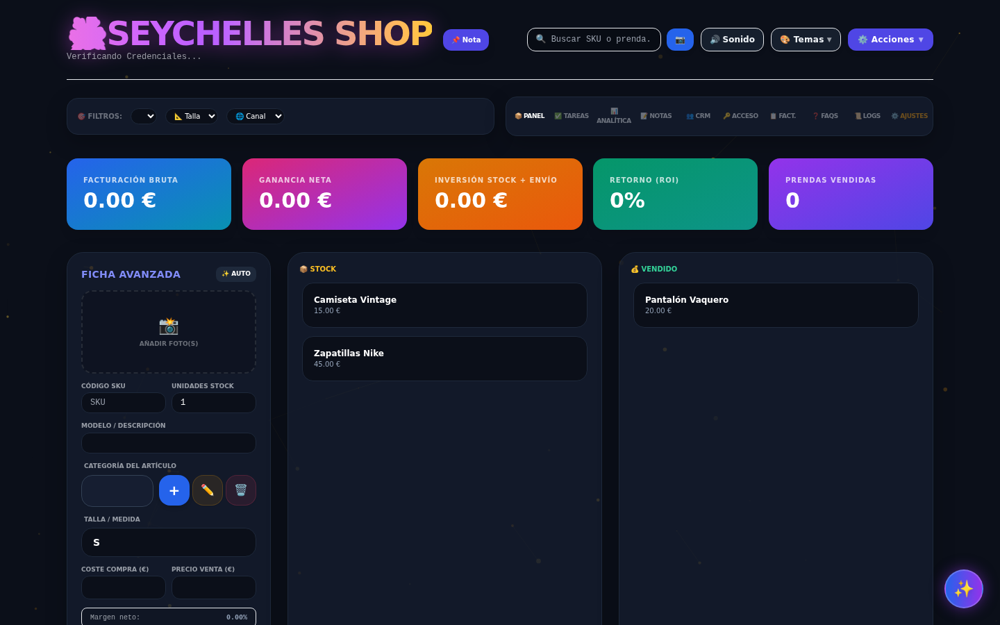
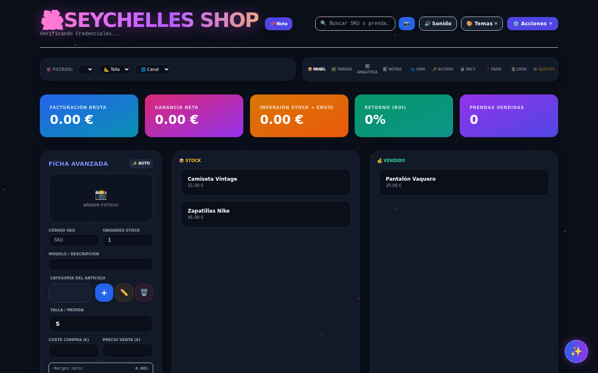
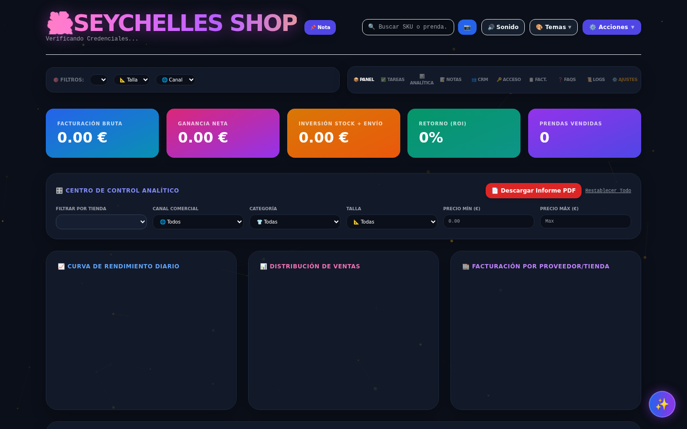
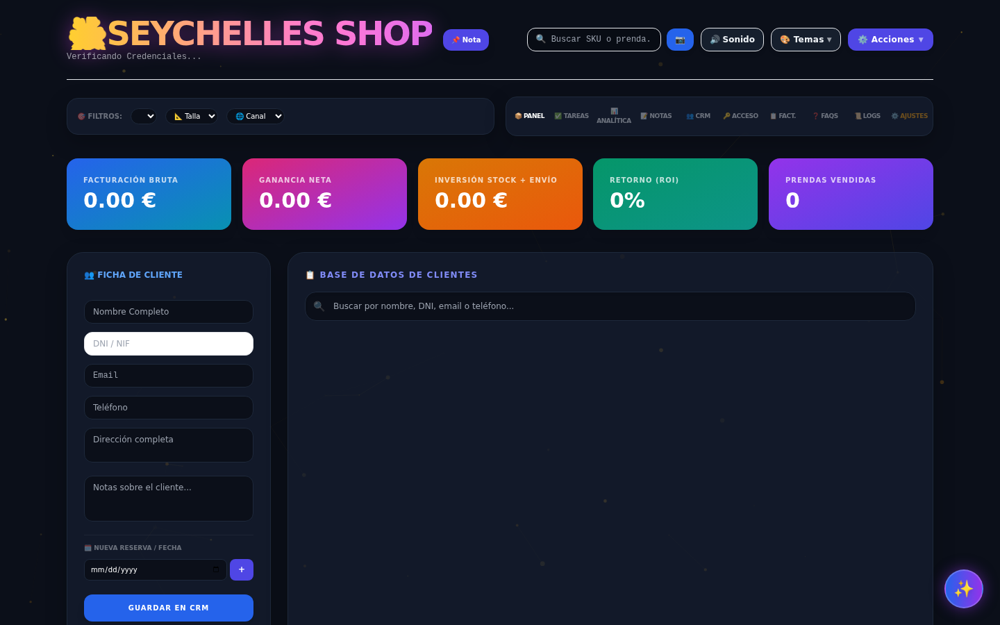

Seychelles es el CRM del futuro. Contabilidad en tiempo real, tableros Kanban dinámicos y gestión multi-rol en una interfaz que parece magia.


Organiza tu stock, reservas y ventas arrastrando tarjetas como en un lienzo. Tus estados (Stock, Vendido, Devuelto) se sincronizan en milisegundos.

Olvídate del Excel. Visualiza tu Retorno de Inversión (ROI), Ganancia Neta y Gastos Operativos de un vistazo.

Crea tu propio ecosistema (Negocio) y asigna roles a tu equipo. Desde Administradores hasta Lectores, tú controlas quién ve qué.
No requiere instalaciones complejas. Registra tu empresa con tu cuenta de Google en segundos.
Comenzar Ahora